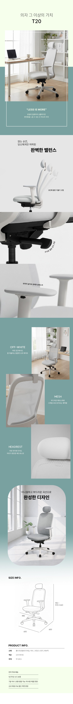

SIDIZ
인체공학적 설계와 기계적 구조의 시각화, T20 테크니컬 상세페이지
product detail
Design Point
- 1 프로젝트 개요 및 기획 의도
- 사용자의 신체 구조를 지지하는 의자의 기능적 본질을 최우선으로 고려하여 기획했습니다. 브랜드가 지향하는 실용주의적 가치를 바탕으로 신뢰도 높은 정보 전달을 위한 전략적 콘텐츠 구조를 직접 설계했습니다.
- 2 AI 협업을 통한 효율적 비주얼 구현
- 사용자가 직접 앉아보지 않아도 의자의 편안함을 체감할 수 있도록 AI 기술을 활용해 디테일한 이미지를 제작했습니다. 제품이 가진 기능과 소재의 느낌을 가장 효과적으로 전달할 수 있는 최적의 이미지로 디자인하였습니다.
- 3 디자인 디테일 및 톤앤매너
- 제품의 기능성을 방해하지 않는 절제된 저채도 컬러 팔레트를 활용하여 기술적 가치를 시각화했습니다. 틸팅 강도 조절, 암레스트 조작 등 각 기능별 클로즈업 샷과 설명 문구를 격자형 그리드 시스템에 배치하여 정보 전달의 효율성을 높였습니다.

